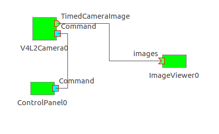
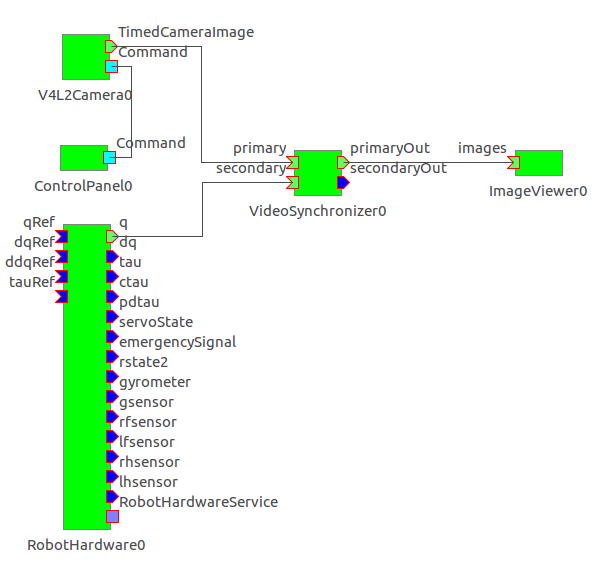
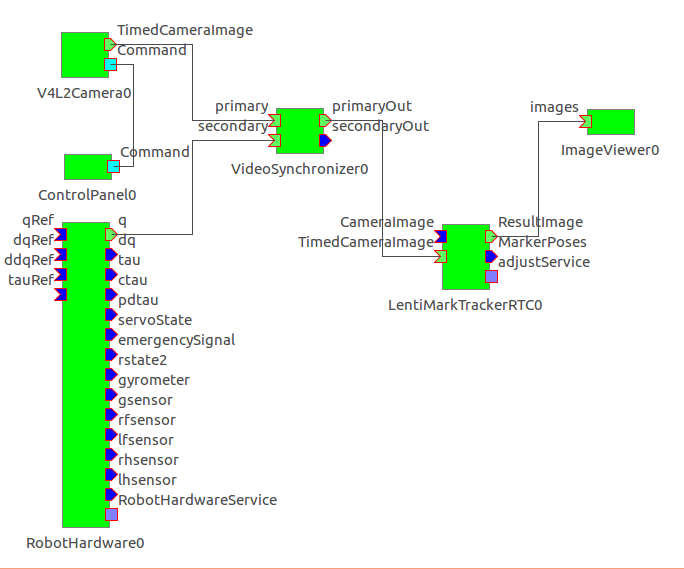

本ソフトウェアパッケージには，HRPロボット上でカメラとキネマティクスの 同期をとるために必要なOpenRTMのコンポーネント，カメラドライバおよび choreonoid pluginが含まれている．主な構成要素は次のとおりである:
V4L2CameraComp: USB接続のWEBカメラなど，Video for Linux v.2(V4L2)
で駆動されるカメラから画像を取得するRTコンポーネント．基本的な機能は
hrpsys-baseに含まれるVideoCaptureCompと同じだが，バスを介して画像が
ホストPCに到着した時刻を記録するタイムスタンプ機能や，様々な
カメラパラメータを動的に変更する機能を有する．IIDCCameraComp: IIDC規格に準拠したFireWireまたはUSB接続のカメラから
画像を取得するRTコンポーネント．機能はV4L2CameraCompと同じだが，
カメラが画像を取得した瞬間の時刻がタイムスタンプに記録される．VideoSynchronizerComp: カメラからの画像とキネマティクス情報を入力し，
各画像フレームに対して，そのタイムスタンプに最も近い時刻のキネマティクス
情報を選択するRTコンポーネント．TUImageViewerPlugin: choreonoid上に画像ストリームを表示するplugin
かつRTコンポーネント．TUControlPanelPlugin: choreonoidからカメラのパラメータを操作するための
pluginかつRTコンポーネント．以下の環境で動作確認済み
ubuntu-14.04(64bit), ubuntu-16.04(64bit)
事前に必要なパッケージをインストールしておく.
$ sudo apt-get install build-essential cmake cmake-curses-gui \
libboost-all-dev xaw3dg-dev libraw1394-dev libusb-1.0-0-dev \
libyaml-cpp-dev libgtk2.0-dev
libraw1394-dev, libusb-1.0-0-devは不要．xaw3dg-devは不要．ubuntu-14.04のデフォルトのコンパイラはgcc-4.8であるが，C++14のサポート が不完全なため，本コードをコンパイルできない．そこで，以下の手順で gcc-4.9をインストールする．
$ sudo add-apt-repository ppa:ubuntu-toolchain-r/test
$ sudo apt-get update
$ sudo apt-get install g++-4.9
$ sudo update-alternatives --install /usr/bin/gcc gcc /usr/bin/gcc-4.8 10
$ sudo update-alternatives --install /usr/bin/gcc gcc /usr/bin/gcc-4.9 20
$ sudo update-alternatives --install /usr/bin/g++ g++ /usr/bin/g++-4.8 10
$ sudo update-alternatives --install /usr/bin/g++ g++ /usr/bin/g++-4.9 20
$ sudo rm /usr/bin/cpp
$ sudo update-alternatives --install /usr/bin/cpp cpp /usr/bin/cpp-4.8 10
$ sudo update-alternatives --install /usr/bin/cpp cpp /usr/bin/cpp-4.9 20
$ sudo update-alternatives --install /usr/bin/cc cc /usr/bin/gcc 30
$ sudo update-alternatives --set cc /usr/bin/gcc
$ sudo update-alternatives --install /usr/bin/c++ c++ /usr/bin/g++ 30
$ sudo update-alternatives --set c++ /usr/bin/g++
GitHubからダウンロードする．
$ git clone https://github.com/t-ueshiba/hrp5p-calib.git
次の手順でコンパイル，インストールする．必要に応じて，インストール場所
をCMAKE_INSTALL_PREFIXで指定する．デフォルトは/usr/local．HRP2-KAI
のVision PC(hrp2001v)の場合は$HOME/usr．
$ cd hrp5p-calib
$ mkdir build
$ cd build
$ cmake -DCMAKE_INSTALL_PREFIX=$HOME/usr ..
$ make
$HOME/srcに展開される．make installは不要．CMAKE_INSTALL_PREEFIXで指定したディレクトリを${prefix}とすると，
次のものがインストールされる：
${prefix}/lib/libTUTools++.so # 様々なツールを収めたライブラリ
${prefix}/lib/libTUV4L2++.so # V4L2(Video for Linux v.2)カメラを制御するライブラリ
${prefix}/include/TU/* # ライブラリを利用するためのヘッダファイル
${prefix}/bin/testv4l2camera # V4L2カメラ用テストプログラム
${prefix}/bin/V4L2CameraComp # V4L2カメラを制御するRTコンポーネント
${prefix}/bin/V4L2MultiCameraComp # 複数のV4L2カメラを同時に制御するRTコンポーネント
${prefix}/bin/VideoSynchronizerComp # カメラ画像とキネマティクスを同期させるRTコンポーネント
libraw1394-dev, libusb-1.0-0-devがインストール済みの場合にインストールされるもの${prefix}/lib/libTUIIDC++.so # IIDCカメラを制御するライブラリ
${prefix}/bin/testIIDCcamera # IIDCカメラ用テストプログラム
${prefix}/bin/IIDCCameraComp # IIDCカメラを制御するRTコンポーネント
${prefix}/bin/IIDCMultiCameraComp # 複数のIIDCカメラを同時に制御するRTコンポーネント
xaw3dg-devがインストール済みの場合にインストールされるもの${prefix}/lib/libTUv++.so # GUIライブラリ
${prefix}/bin/ImageViewerComp # カメラ画像を表示するビューワ
${prefix}/bin/MultiImageViewerComp # 複数のカメラ画像を表示するビューワ
${cnoid_libdir}/libCnoidImageViewerPlugin.so # カメラ画像を表示するplugin
${cnoid_libdir}/libCnoidMultiImageViewerPlugin.so # 複数のカメラ画像を表示するplugin
${cnoid_libdir}/libCnoidControlPanelPlugin.so # カメラ等のデバイスのパラメータをGUIから設定するplugin
${cnoid_libdir}/rtc/V4L2CameraRTC.so # V4L2カメラを制御するRTCItem化可能なRTコンポーネント
${cnoid_libdir}/rtc/V4L2MultiCameraRTC.so # 複数のV4L2カメラを制御するRTCItem化可能なRTコンポーネント
${cnoid_libdir}/rtc/IIDCCameraRTC.so # IIDCカメラを制御するRTCItem化可能なRTコンポーネント
${cnoid_libdir}/rtc/IIDCMultiCameraRTC.so # 複数のIIDCカメラを制御するRTCItem化可能なRTコンポーネント
$HOME/cnoid_projcet/*.[cnoid|py] # テスト用choreonoidプロジェクトファイルとpythonスクリプト
${cnoid_libdir}は，choreonoidのpluginを格納するディレクトリで，たとえば$HOME/usr/lib/choreonoid-1.7．IIDCCameraRTC.so, IIDCMultiCameraRTC.soは，
libraw1394-dev, libusb-1.0-0-devがインストール済みの場合のみインストールされる．インストール場所${prefix}にコマンドと共有ライブラリのパスが通ってい
なければ，~/.bashrc の中に
# ~/.bashrc
export PATH=${PATH}:${prefix}/bin
export LD_LIBRARY_PATH=${LD_LIBRARY_PATH}:${prefix}/lib
を追加してコマンドと共有ライブラリを検索可能にする．
デフォルトでは一般ユーザにはFireWire/USBデバイスを直接操作する権限がな
いので，これを許可するために
/etc/udev/rules.d/40-permissions.rulesというファイルを作る．
$ sudo vi /etc/udev/rules.d/40-permissions.rules
そして，以下の内容を記入する．
# /etc/udev/rules.d/40-permissions.rules
SUBSYSTEM=="firewire", GROUP="video"
SUBSYSTEM=="usb device", GROUP="video"
SUBSYSTEM=="usb", ENV{DEVTYPE}=="usb_device", GROUP="video"
これにより，videoグループに属するユーザにアクセス権が与えられる． そして，実際にカメラを使用するユーザをvideoグループに登録する． （ubuntuの場合，videoグループ自体は既存なので，新たに作る必要はない）
$ sudo vi /etc/group
### 例：hrp2user を video に登録 ###
video:x:44:hrp2user
前項の設定を有効化するためにホストマシンをリブートする．
$ sudo reboot
再ログインして，自分がvideoグループに属していることを確かめる
$ id
と打ってgroups= に44(video) が表示されればOK.
V4L2カメラの場合を例にして説明する．${prefix}/bin に実行パスが通って
いることを確認した上で
$ testv4l2camera
と打つ．ウィンドウが開き，利用可能なカメラがあればそのデバイスファイル
名/dev/video*がリストに表示されるので，その一つを選択して"View"ボタ
ンを押す．すると新たなウィンドウがポップアップするので，"Continous
Shot"ボタンを押して画像ストリームが表示されればカメラは正常に動作して
いる．カメラのパラメータや画像フォーマット等をGUIから設定できる．
次に，RTコンポーネントのためのカメラ設定ファイルを生成する．上記
testv4l2cameraの最初のウィンドウで"Save"ボタンを押せば，全カメラの現
在の設定がYAMLフォーマットで
${prefix}/etc/V4L2Camera.conf
に保存される．
次に，カメラが接続されているホストから別のホストにOpenRTMを介して画像 を転送できるか確認する．
まず，カメラが接続されているホスト(たとえばhrp2001v)において，RTコン
ポーネントのネームサーバへの登録名のフォーマットと実行周期をデフォルト
から変更するために，以下の内容で/usr/local/etc/rtc.confを作成する:
# hrp2001v:/usr/local/etc/rtc.conf
corba.nameservers: localhost
naming.formats: %n.rtc
logger.enable: NO
logger.loglevel: VERBOSE
exec_cxt.periodic.rate: 1000
そして，カメラ制御用RTコンポーネントを立ち上げる:
hrp2001v$ rtm-naming
hrp2001v$ V4L2CameraComp
次に，choreonoidがインストールされているホスト(たとえばhrp2001t)に
も上記手順でhrp5p-calibをインストールする．そして，
~/cnoid_project下にインストールされたchoreonoidプロジェクトファイ
ルを開く:
hrp2001t$ cd ~/cnoid_project
hrp2001t$ choreonoid V4L2Camera-HRP2KAI.cnoid
ウィンドウに"Control panel"ビューと"Image viewer"ビューが現れ，前者に カメラパラメータを設定するGUIウィジェットが，後者にカメラからの画像が それぞれ表示されれば正常に動作している．このとき，コンポーネント間の接 続は次のような状態になっている:

以上の動作確認が完了しているとの前提で，カメラ画像とロボットのキネマティ
クスを同期させる方法を説明する．例として，HRP2-KAIのビジョン
PC(hrp2001v)に接続されたカメラからの画像と制御PC(hrp2001c)が取得し
た関節角度をhrp2001v上で同期させ，その結果をターミナルPC
(hrp2001t)上のchoreonoidに表示させることを考える．
キネマティクス情報と画像フレームには，それぞれ制御PC(hrp2001c)とビジョ
ンPC(hrp2001v)のクロックによりタイムスタンプが付される．両者の時刻合
わせをするため，ソフトウェアクロックに加えてハードウェアクロックも同期
できるchronyを使用する．hrp2001cをタイムサーバとし，このクロックに
hrp2001vのクロックを同期させる．
まず，両方のPCに
% sudo apt-get install chrony
によってchronyをインストールする．次に，
hrp2001c:/etc/chrony/chrony.confに対して，コメントアウトされている次
の行を生かす:
# hrp2001c:/etc/chrony/chrony.conf
local stratum 10 # このホストをサーバにする
更に，次の行を追加する:
# hrp2001c:/etc/chrony/chrony.conf
allow 150.29.144.0/9 # subnetからの問い合わせに応じる
また，hrp2001v:/etc/chrony/chrony.confには次を追加する:
# hrp2001v:/etc/chrony/chrony.conf
server hrp2001c prefer # hrp2001cに優先的に問い合わせる
stratumweight 3
makestep 1.0 3
両ホストで
% sudo systemctl restart chrony
によってデーモンを再起動した後，しばらくしてからhrp2001v上で
hrp2001v% chronyc sources
と打って，同期がとれているか確認する．
制御PCで
hrp2001c cd ~/usr/share/hrpsys/samples/HRP2KAI
hrp2001c sudo ./hrpsys.sh
と打ってRTコンポーネントを起動する．次に，ビジョンPCで
hrp2001v rtm-naming
hrp2001v V4L2CameraComp
hrp2001v VideoSynchronizerComp #(別ウィンドウで)
と打ってカメラ制御と同期用のコンポーネントを起動する．最後にターミナルPCで
hrp2001t% cd ~/cnoid_project
hrp2001t% choreonoid SyncV4L2Camera-HRP2KAI.cnoid
と打ってコンポーネント間を接続してactivateする．これにより次のような接 続状態になる:

VideoSynchronizer0のprimaryポートに入力された画像は，そのまま
primaryOutポートに出力される．secondaryポートに入力された関節角度
ベクトルは，各画像フレームのタイムスタンプに最も近い時刻を持つものが選
択されて，その画像フレームと同時にsecondaryOutポートに出力される．
さらに，VideoSynchronizerCompとImageViewerの間にLentiMarkTrackerRTCを 挿入すれば，トラッカが出力するマーカの3次元ポーズと関節角度を同期でき る．前節のコンポーネントに加えて，ビジョンPC上で
hrp2001v% LentiMarkTrackerRTC
と打ってトラッカを起動する．そしてターミナルPCで
hrp2001t% choreonoid SyncLentiMarkV4L2Camera-HRP2KAI.cnoid
と打ってコンポーネント間を接続してactivateする．これにより次のような接 続状態になる:

VideoSynchronizer0のsecondaryOutポートに出力される関節角度ベクトル
は，LentiMarkTrackerRTC0のMarkerPosesポートに出力される3次元ポーズ
と同期されている．